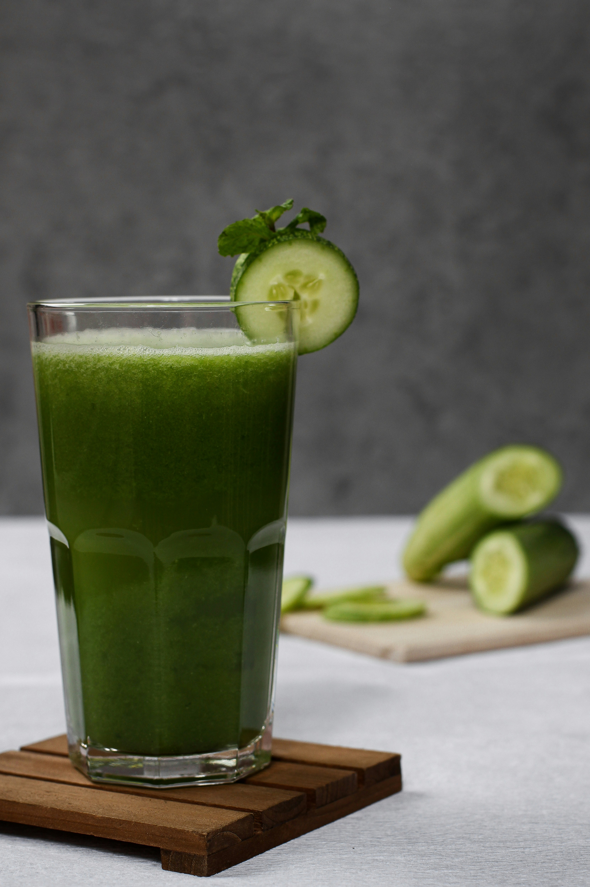
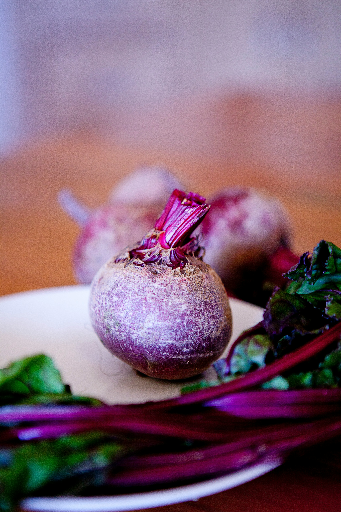

Green Refresh

Ingredients:
- 1 cucumber
- 2 celery stalks
- 1 green apple
- 1 handful spinach
- 1/2 lemon, peeled
- 1 teaspoon spirulina powder
Suggestion: If it tastes too bitter, use only a quarter teaspoon of spirulina.
DetoxJuices Recipes
Pick something healthy and delicious from our small selection of juice recipes. You can juice, or blend if you don't have a juicer.

Suggestion: If it tastes too bitter, use only a quarter teaspoon of spirulina.

Suggestion: Add a pinch of celtic salt to absorb more minerals.